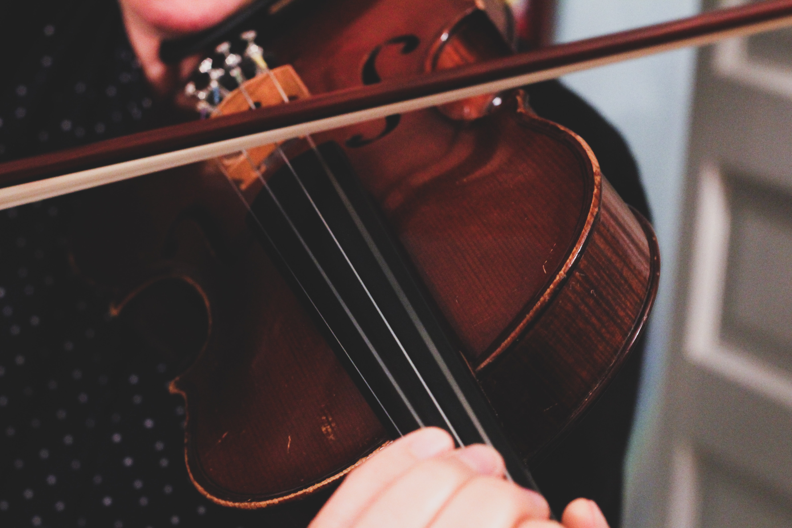

The guitar is a fretted musical instrument that
typically has six strings.
Snare & Bass Drum Kit
In the Hornbostel-Sachs classification system, it is a
membranophone.
Acoustic & Digital Pianos
The word piano is a shortened form of pianoforte, the
Italian term for the early 1700s versions of the
instrument, which in turn derives from gravicembalo col
piano e forte (key cymbal with quieter and louder)[1]
and fortepiano.
Acoustic Violins

The violin, sometimes known as a fiddle, is a wooden
chordophone (string instrument) in the violin family.